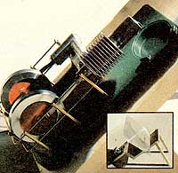

We all know (or should know) that the internal combustion engines in our automobiles, tractors, lawn mowers, etc., are called "internal combustion" engines because they combust (burn) their fuels internally (inside the powerplants).
And a few of us even know that the old-timey steam engine is an external combustion engine . . . because its fuel is burned outside the cylinders in which its drive pistons operate.
What a good many of us don't know, however, is that-over the years-[1] a number of other kinds of both internal and external combustion engines have been invented, [2] one of these external combustion powerplants operates on something known as the "Stirling cycle", and [3] inventor John Ericsson built and successfully ran a Stirling engine on nothing but sunshine away back in 1872. (See. And you thought all this solar energy business was something new!)
At any rate, MOTHER's researchers recently bought a very small Stirling-cycle engine for $31 from Solar Engines, 2937 West Indian School Rd., Phoenix, Ariz. 85017. And, after running it with heat from an external alcohol flame for a while, someone said, "Hey! I betcha we could operate this little dude on solar energy."
Well, we just happened to have a onesquare-foot Fresnel concentrating lens (purchased from Edmund Scientific Co., 3877 Edscorp Building, Barrington, N.J. 08007) handy. So the guys in the shop quickly rigged up a little frame of scrap lumber to hold the lens and the tiny powerplant so that when the former was aimed at the sun it'd focus a hot spot directly on the latter's drive cylinder.
By that time it was three in the afternoon and Ole Sol was fading fast for what was really too small a concentrating lens, so MOTHER's experimenters cheated a little and brought the engine's cylinder up to working temperature with a propane torch. Then they shielded the setup from the wind, backed off, and let the sun take over. And take over it did . . . which is why the engine you see here was running at 1,000 rpm-strictly on concentrated solar radiation-when the photograph was taken.
And now you know why several research labs around the world are tinkering with very large concentrating and tracking solar collectors designed to heat a working fluid-such as cottonseed oil-to several hundred degrees, store the superheated liquid in an insulated container . . . and then tap that source of heat both day and night to run a Stirling-cycle engine big enough to do some really useful work. MOTHER will report on this subject as progress is made.
|
 |
|
|